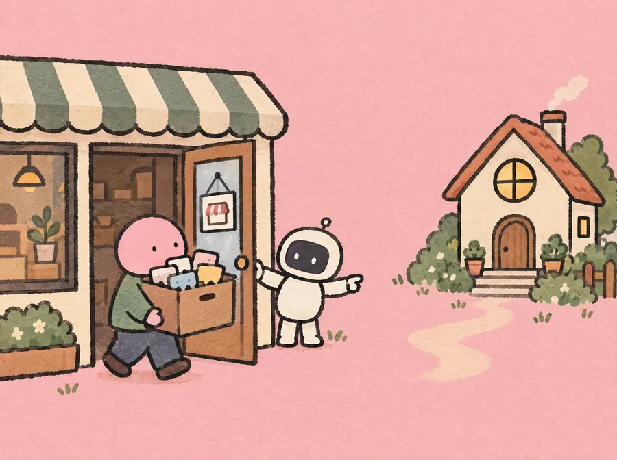

2026.10.10 토
오늘 아침AI 소식 세 가지
카카오의 AI 앱 카나나가 10월 15일에 문을 닫고, 미국 유타주에서는 AI가 여드름 약 처방전을 쓰기 시작했어요. 구글은 인터넷 없이 회의 메모를 정리하는 AI 앱을 내놓았어요.
오늘 소식 읽기오늘의 소식
어려운 AI 소식을 아침 먹기 전 5분 안에, 초등학생도 할머니도 그림 한 장으로 알 수 있게.
AILAB 편집실
오늘의 말
구독